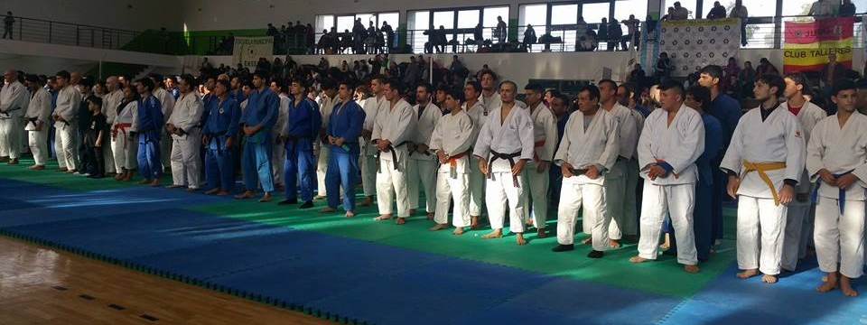
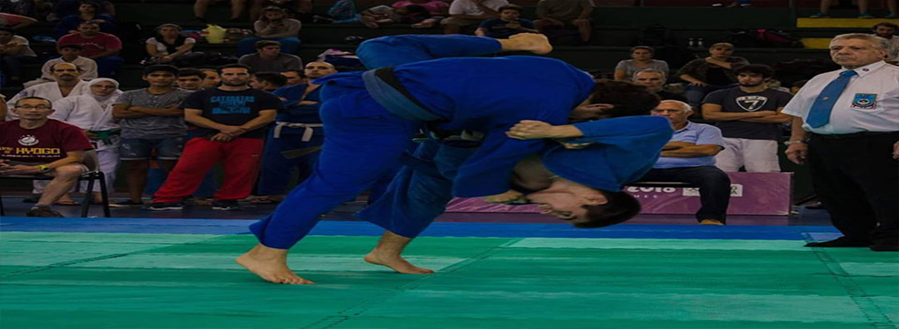
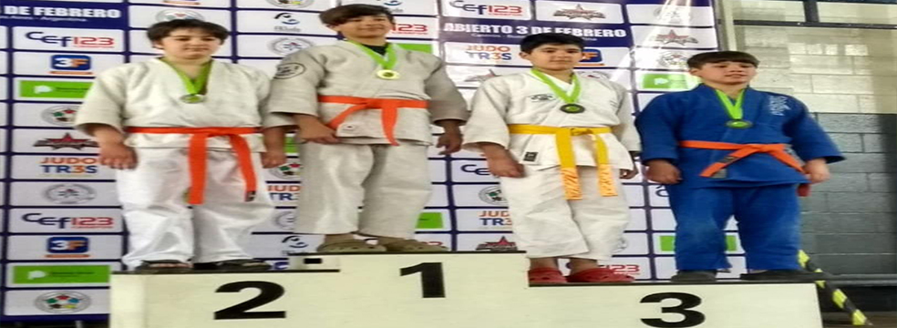
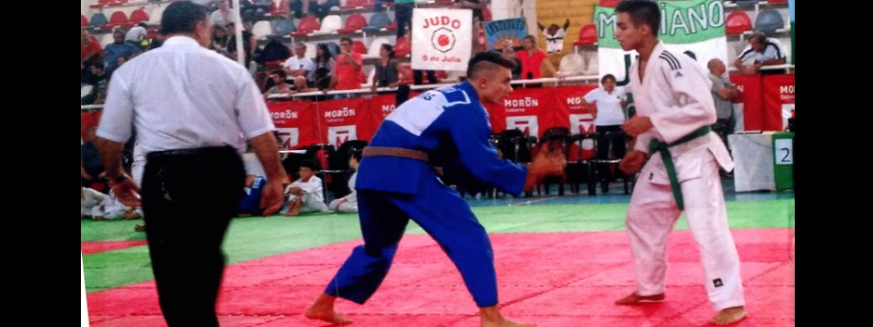

Bienvenidos
La Federación Metropolitana de Judo trabaja para el desarrollo, organización y difusión del judo, promoviendo los valores del deporte y la formación integral de sus practicantes.
La Federación Metropolitana de Judo trabaja para el desarrollo, organización y difusión del judo, promoviendo los valores del deporte y la formación integral de sus practicantes.



